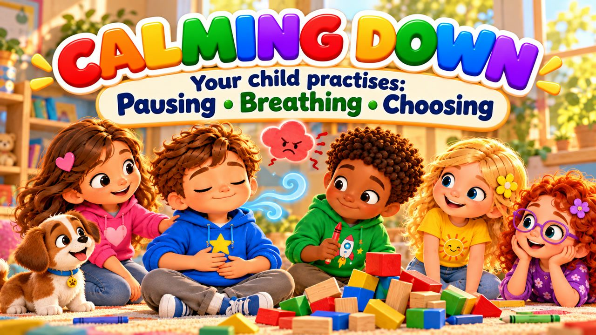
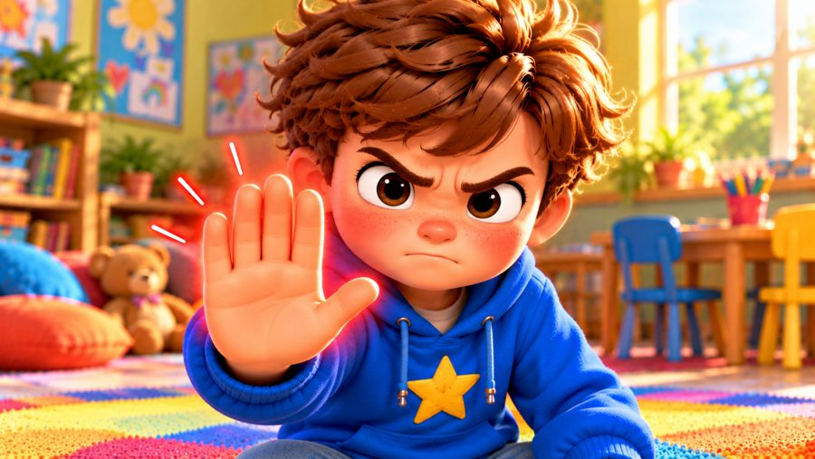
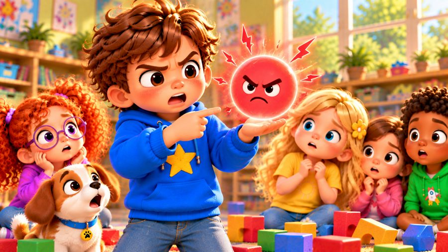
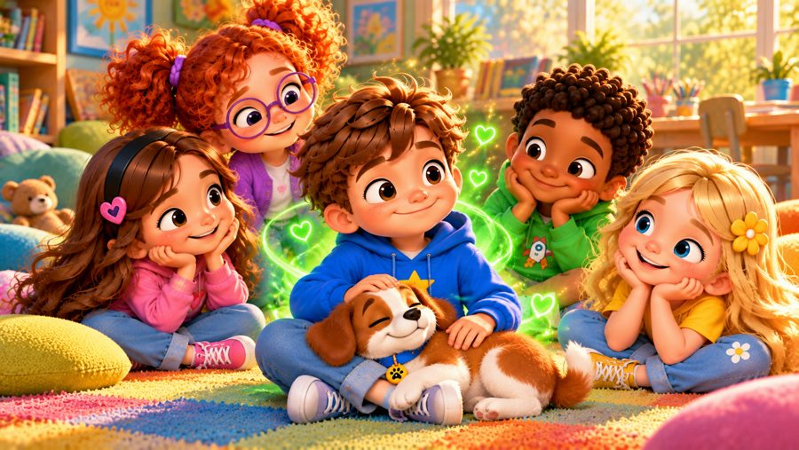

Stop
A calm-down song for kids! 💚 Sing along with Max, Mia, Jay, Lily, Rosie and Buddy the puppy as Max learns what to do when he feels angry: STOP, BREATHE, THINK — then CHOOSE!
"Stop" is a sing-along anger management song for kids. When someone bumps Max's tall tower and when Jay has the red crayon he wants, Max feels big angry feelings — but he learns to stop, take a slow breath, name his feeling and use his words instead of his hands. With big karaoke lyrics on screen, it's perfect for preschool, kindergarten and early elementary kids (ages 3–8), at home or in the classroom.

▶💡 Why this skill matters: calming down
Anger is a normal feeling — what children need to learn is what to do with it. A few simple calming tools (stop, breathe, count) help them avoid hurting others and feel in control again. Practise the calm breath together when everyone is calm, so it’s ready when big feelings come.
👨👩👧 What your child learns
- Feeling angry is okay — anger isn't bad
- Noticing the body clues: hot face, tight hands
- A simple calm-down plan: stop, breathe, think, choose
- Naming the feeling and taking some time
- Using words, not hands, and waiting for a turn
💬 Talk about it after the song
- What does your body feel like when you're angry?
- What helps you calm down?
- What could you say instead of grabbing or shouting?
🏅 Quiz & Certificate
Watched the song together? Now read each question aloud — your child points to the right picture. Answer all 6 questions and your child earns a printable certificate!
🔒 The name is only used to draw the certificate on your device. We don't save or send anything.
You did it! 🎉
All 6 answers are right! Type your child's name to make the certificate.
🖨️ Free printables
Free for home and classroom use. Print on A4 or Letter paper.
🖼️ Scenes from the song






🎵 More songs


🎤 Lyrics – Stop
Uh-oh...
I'm getting angry!
My face feels hot,
my hands feel tight...
What can I do?
Stop...
Breathe...
Slow it down.
I can calm down!
I built a tower way up high,
I smiled and reached up to the sky.
Then someone bumped it passing by...
CRASH!
My tower fell!
I wanted to shout,
I wanted to yell,
My face got hot,
I knew it well.
"I'm angry!"
That's what I feel.
So I stopped for a moment
and stayed very still.
Stop for a moment,
breathe in slow...
One... two... three...
and let it go.
Feelings can be big,
but here's what I know:
I can choose
what I do next!
When I'm angry,
I can calm down!
Breathe in...
Breathe out...
Slow it all down!
I can stop!
I can breathe!
I can say what I need!
Being angry is okay,
I can choose what I do and say!
Stop!
Breathe!
Think!
Then choose!
I can calm down
when I'm angry too!
I wanted the red crayon,
but Jay had it first.
I felt that angry feeling
getting worse and worse!
I almost grabbed it,
then stopped my hand.
I took a breath
and made a plan.
"Can I use it
when you're done?"
Jay smiled and said,
"Of course you can!"
I waited my turn,
then colored away.
I used my words
and solved it that way!
Stop for a moment,
breathe in slow...
One... two... three...
and let it go.
Feelings can be big,
but here's what I know:
I can choose
what I do next!
When I'm angry,
I can calm down!
Breathe in...
Breathe out...
Slow it all down!
I can stop!
I can breathe!
I can say what I need!
Being angry is okay,
I can choose what I do and say!
Stop!
Breathe!
Think!
Then choose!
I can calm down
when I'm angry too!
Face feels hot?
STOP!
Hands feel tight?
BREATHE!
Feeling angry?
NAME IT!
Need some space?
TAKE SOME TIME!
Ready to talk?
USE YOUR WORDS!
What happens next?
I CHOOSE!
Stop!
Breathe!
Think!
Choose!
Anger isn't bad.
It's a feeling that I have.
But I choose
what my hands do.
I choose
what my words say.
I can take my time...
until I'm ready.
When I'm angry,
I can calm down!
Breathe in...
Breathe out...
Slow it all down!
I can stop!
I can breathe!
I can say what I need!
Being angry is okay,
I can choose what I do and say!
Stop!
Breathe!
Think!
Then choose!
Big feelings come,
and big feelings go.
I can give myself
some time to slow.
I feel it!
I name it!
I breathe!
And then...
I choose what I need!
Breathe in...
Breathe out...
I'm feeling calmer now.
It's okay to feel angry...
and I know what I can do.